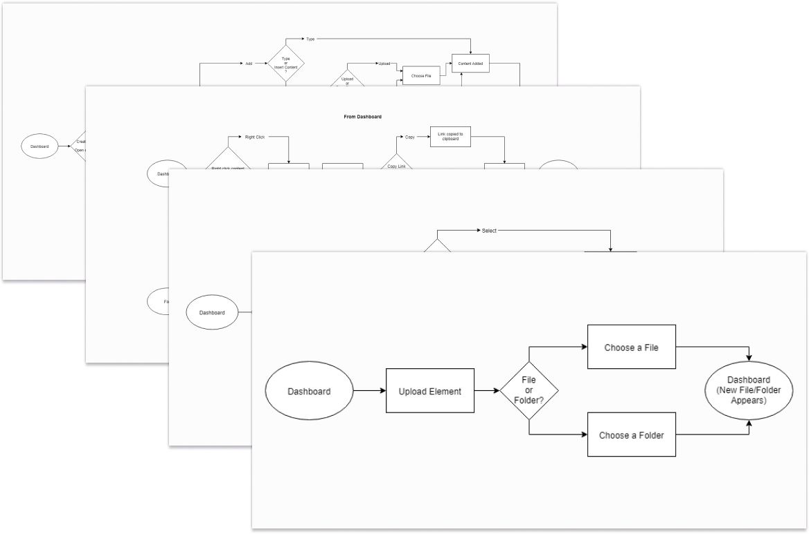
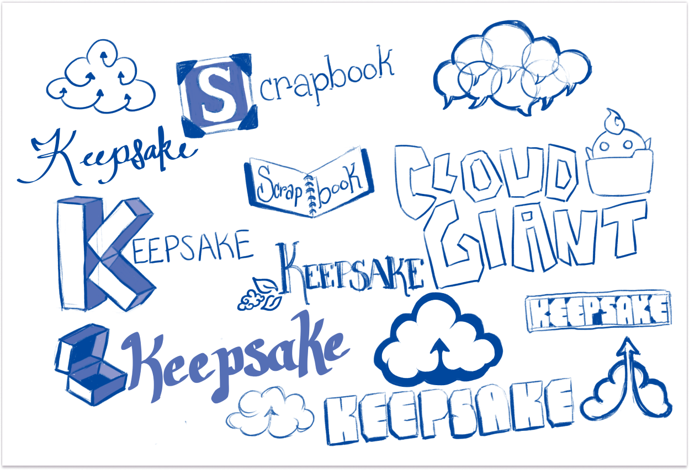

Summary
This project was born out of a problem I observed while attending a convention. My friends and I were browsing through booths run by independent artists, collecting their business cards as we went so we could remember each artist later and follow them on social media. Unfortunately, what ended up happening is we took so many cards that we quickly became confused at who was who and any notion of following all these people on social media seemed daunting. My friends and I all concluded the same thing: that this always happened when we take business cards - we just never end up saving that information to our phones like we intend to when we take the card.
It made me wonder: was there a digital business card app that could solve this problem for us? And, if there was, what problems were these apps not solving for their users to make digital business cards more universally adopted?
Problems
When creating a Digital Business Card app, the problems I needed to solve for users came two-fold. First, I needed to consider the problems that users had with physical business cards that could be solved by a digital business card. Second, what problems were current digital business card apps not solving for their users?
Physical
Problems with physical business cards:
Recipients don’t always save information
Impractical to always carry business cards
Aren’t as fast and easy as inputting the information directly into one’s phone
Reprinting cards to update information isn’t environmentally responsible and can be expensive
Digital
Problems with current digital business card apps:
Don’t allow the same amount of customization as physical cards
Negative experiences with app sign-up requirements
The cost of full digital card services isn’t competitive with physical cards
Sharing digital cards isn’t as easy as directly saving to phone
Solutions
The solutions I arrived at were:
Create an app that solves the problems with both physical and digital cards for users that is professional, easy, and fun to use
Allow the same amount of customization as physical cards with digital cards so users can match their cards and style
Don’t require recipients to sign up for the app to receive the card and save information to their phone
Make the cost competitive with the printing cost of business cards
Use QR codes and Apple’s native sharing tools to make sharing and saving cards as fast and easy as saving information directly to your phone
Make updating users’ contact information and cards easy
User Research
I began my user research with researching digital business card apps and scanners, and trying to find if they existed and why users weren’t adopting them or using them in addition to physical cards. I found that several business card apps exist, but none are widely popular or used. The general consensus seemed to be that digital business card apps were interesting, but needed some improvements to become more widely adopted. I decided to dig in deeper in my user research.
Survey
Since digital business card apps aren’t widely used - I personally don’t know anyone who currently uses one - I knew finding a user base to survey about their use of these apps was going to be difficult. I decided to focus my survey instead on a few questions about users’ behavior that I knew they did, or were more likely to do. These questions centered around:
How do users share or receive contact information in a variety of social situations ranging from casual to professional?
What do users do with business cards when they receive them?
Do users have physical business cards and if so, what is their experience with them?
Have any users used a digital business card app and if so what was their experience?
What barriers to entry exist for users making a business card, whether physical or digital?
My survey results showed that:
52% of users text their contact information to share it in a casual setting, and 72% exchange business cards in a professional setting
None of the respondents answered that they put contact information into their phone after receiving a business card immediately after receiving it - most users indicated they store business cards for later with 40% saying they then forget to input the information later, and 36% indicating they remembered to input the information later.
Half of respondents have a business card, whether physical or digital, and their experiences with physical cards is overall positive.
Of the few respondents that had used a digital business card app, all had negative experiences with those apps and no longer use them.
58% of users that indicated they did not use a business card stated that it was because they currently had no need of one. The other 42% stated that it was due to having to carry business cards on them.
Competitive Analysis
To help supplement my survey, which I had assumed correctly was going to be lacking feedback from digital business card app users, I researched current digital card apps and went to their websites and store pages to read the app reviews and what their users’ experiences were. This research became the basis for my competitive analysis of the apps Haystack, HiHello, and SwitchIt.These apps are all very similar, with only slight differences in services offered, pricing plans, and target audiences. All of these apps had average to good ratings, although all but Haystack’s Google Play page had less than 300 ratings. However, among these sparse ratings, there were some consistent trends I found in user feedback:
Users wanting more customization for the look of the card. All of these apps only allow their users to change a few colors, images or videos, and add branding. The layout and look is predetermined for all of these apps, except for Haystack that allows the user’s employer to choose what their card looks like. Many of them end up looking more like social media profiles instead of a business card
Users want the ability to link their social media information without paying for it
The app should function properly, otherwise it leads to embarrassing professional situations
These all became problems I knew I would need to focus on fixing for users moving forward with this project.
View Full AnalysisUser Personas
Taking the results of my user research and combining it with the research and results of my competitive analysis, I created two user personas. These users were both young professionals in their 20’s-30’s that put a voice to the problems I needed to now solve for the users.
Kelly M.
The Artist
Age: 34 | Location: Lexington | Job: Receptionist / Artist | Gender: Female
Motivations
Kelly has a business card for their full-time day job that was provided through their workplace. This card is branded according to their workplace’s branding standards, and they only really use it for events run through their workplace. She also has a business card for her weekend gig as a freelance artist selling art online and at conventions. For her art business card, she likes being able to express her artistic style and brand through the card, so she likes designing and customizing her cards with her own art. Instead of handing out and printing a third business card, when she meets a business contact for her art outside of conventions, she typically exchanges email addresses instead of using her business card, which she sees as more for customers. She finds that when she’s not “on the job”, she typically forgets to bring her business cards with her. This has led to some missed networking opportunities. Kelly uses her business cards as a marketing tool when packaging sold merchandise and hands them out at conventions to try and gain more followers on social media and future customers. While she feels the cost of business cards are worth it for the marketing she gets out of them, she wishes she saw more returns for the number of cards she hands out. Kelly would like a digital business card that would make it easier for people to follow her on social media, that she could customize to match her branding and physical business card, and that as long as she has her phone, she can’t forget it. To stand out in the convention crowd, it would be nice if the process for sharing her card was not only easy and worked well with little to no wifi, but also drew attention to her booth.
Frustrations
- Remembering to carry business cards
- Missing networking opportunities due to not having a card
- Apps not working with bad/no wifi connection
“Express Yourself!”
Martin A.
The Change Maker
Age: 28 | Location: Nashville | Job: Radiology Tech | Gender: Male
Motivations
Martin doesn’t currently have a business card because he doesn’t feel he does anything that warrants having a business card, and when he meets new people he either inputs their information directly into his phone or friends the other person on social media. He has changed jobs or job titles frequently since graduating college, so having a paper business card, he feels, is impractical. When he has had business cards for jobs in the past, or taken other people’s cards, he felt he was always losing them. He’s also very conscious of the environment, and so given the cost of printing business cards on recycled materials, added to the environmental impact of printing new cards as frequently as his job changes, he hasn’t been able to justify the cost of having a physical business card. Martin tried a digital business card once for a networking event, but the app he used required the recipient of the business card to sign up for the app to be able to put his information into their phone, which the recipient didn’t end up doing. That experience was embarrassing enough to make Martin not want to use the app again, and scared him off of using digital business card apps. If he were to use another business card app, he would need it to be easily updatable, not require the recipient to sign up for an account, and it needs to be as easy as adding someone on social media or inputting their information into his phone.
Frustrations
- Recipients having to sign up for the app to receive business card
- Business cards are easy to lose or forget
- Physical business cards are difficult to update when your information changes
“Let’s try something new!”
User Stories & Flows
With the problems that needed to be solved for the users now clear and backed by user research, it was time to create solutions to these problems. These solutions became the basis for my user stories, which I prioritized in order of how effectively I felt they solved the users’ problems. Now that I had a list of features to serve as my mean viable product and solutions for my users, it was time to determine how these features would function in the app. I researched these processes in other, similar apps such as the apps I had done my competitive analysis over, social media apps, and the native contacts app for the iOS to get a better idea of how these features function. I then developed my own user flows based off of this research.
 View User FlowsBranding
The name “Wavz” is derived from the word “waves” as in both the action of greeting someone by waving to them and the phrase “make waves” which means to make a significant impression. Waves also brings to mind imagery associated with ocean waves, which are fun, fresh, and full of motion. I wanted to bring all of these concepts together in the branding, creating a fun, modern, fresh, clean, and easy feel.
Target Audience
For the branding of this app, I wanted the target audience to be young professionals as they were the largest responders in my user research survey and they were the audience I felt would be best served by this app.
Logo
The name “Wavz” is derived from the word “waves” as in both the action of greeting someone by waving to them and the phrase “make waves” which means to make a significant impression. Waves also brings to mind imagery associated with ocean waves, which are fun, fresh, and full of motion. I wanted to bring all of these concepts together in the branding, creating a fun, modern, fresh, clean, and easy feel. The logo was made to look like a wave coming towards the user, expressing that feeling of motion.
Color Scheme
Green was chosen as the brand color of the app to give the feeling of freshness and prosperity for the user. An accent color of orange maintains the fresh feel, but stands in stark contrast to the green to call the user’s attention to unusual elements, such as delete buttons.
User Experience Design
It was now time to design the screens that were necessary for my MVP as they were laid out in my user flows. To appeal to my target audience, I wanted to keep the design of the app simple and modern looking. I researched modern apps that used cards or card-like elements in their designs, such as banking or digital credit card apps, to draw inspiration from and observe their functions. I wanted to get away from designs other digital business card apps employ which are laid out more similarly to social media profiles rather than business cards. My reasoning for this design choice was it could help ease the transition from physical cards to digital cards.
Sketches & Wireframes
I tested these wireframes with users using paper prototypes. I asked each of the participants to complete the functions laid out in my high priority user stories to ensure they were clear to users. Testing revealed some that my dashboard navigation was cluttered and placed an emphasis on creating cards rather than sharing them. Testing also revealed I had left out a crucial function in the editing of cards, contacts, and the users’ profile: the ability to delete. I replaced the cluttered bottom bar with a more simplistic one, emphasizing the main functions of the app - to scan or share cards - and moved the ability to add a new card to the functions available once one is viewing their cards. I also added delete functions to each text field, and a delete button at the bottom of cards and contacts.
High Fidelity Mockups
After making the necessary changes from testing my wireframes, I applied my branding to my wireframes to create my high-fidelity mockups. I asked fellow UX Designers for feedback on these designs, with the majority of the feedback pertaining to lowering the font size throughout the app just a little. As I was using large titles for my top navigation, it was also suggested that I should apply Apple’s GUI and left align my titles rather than center them.
Clickable Prototype
I then created an Invision prototype and tested each of my high priority user stories with users. I wrote a testing script to help guide users through the testing process, asking users to try and vocalize their thoughts as they moved through the app. The two areas that were brought to my attention during this testing were the tutorial for new users to the app and the process for editing text fields in the app. Although users had understood the tutorial, the way they moved through it indicated to me it needed to be refined to be clearer as a tutorial. When it came to editing text fields, I observed all of my users struggling to find the correct editing options, expecting the app to behave similarly to the iOS’s native contacts app. I refined the tutorial process, more clearly laying out the steps necessary to complete the tutorial, and I changed the editing process from text fields that the user would add to their profile as needed to all possible text entry fields being listed and available for users to edit on the same screen. Once users insert information into the text field, a new, blank text field of the same kind appears, allowing users to add more information if necessary.
Conclusion
What really worked in the project was research and testing at every stage in the process. Even after I had concluded my user research, I continued to do research throughout the design, which gave me a clearer direction forward when I didn’t have users that had used a similar product to rely on.
If I had more time, I would have tried to reach out to more users that had used competitors’ apps to interview them about their experiences directly and ask them to participate in user testing. As it was, however, I had difficulty finding users that had used digital business card apps before, and an even more difficult time finding users that had used similar apps more than a handful of times, so the majority of my testing was conducted by users new to digital business card apps. Another area I had some trouble implementing was in the prototype. Because part of the app is what the recipient of the business card sees outside the app when they receive a user’s card, I wasn’t sure how to convey this process to users in my prototype. Currently, users of the prototype are taken to this mobile screen view when they follow the process for sharing a card, but I wonder if there was a more elegant way to go about showing this process.
What I learned during this process is in the case of a product that doesn’t allow for access to many users that have used similar products before, that reviews from competitor’s products can provide helpful insights and research to combine with non-user behaviors. I also learned to keep my MVP simple and clean early on in the process, making it easier to test the features of the MVP with users before expanding on them.